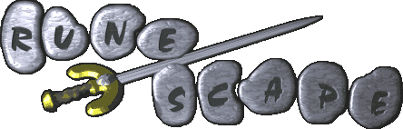

Counter Strike: Global Offensive
Counter Strike has been a passion of mine for almost 10 years now. I started with Counter Strike: Source casually and when CSGO came out I started playing habitually. It is my most played game to date and I absolutely love it!

League of Legends
League of Legends is a great game for friends. All of my friends play it and we've had some amazing times playing together. The game can definitely be rage inducing, but it always leaves good memories I can laugh about later on.

Old School Runescape
I've played this game since I was 9 years old and it has been an addiction ever since. It's not the most graphically or mechanically impressive game, but it's absolutely wonderful for the nostalgia I get every time I play it.
